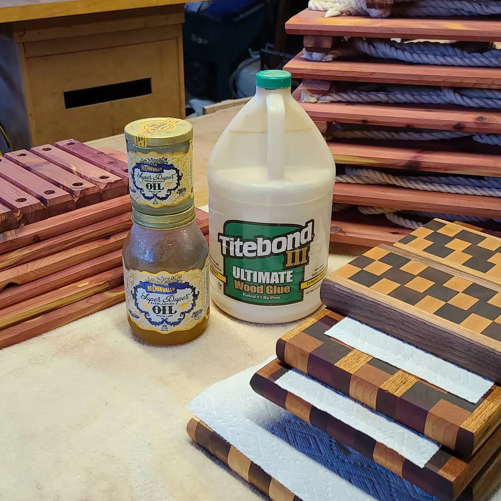
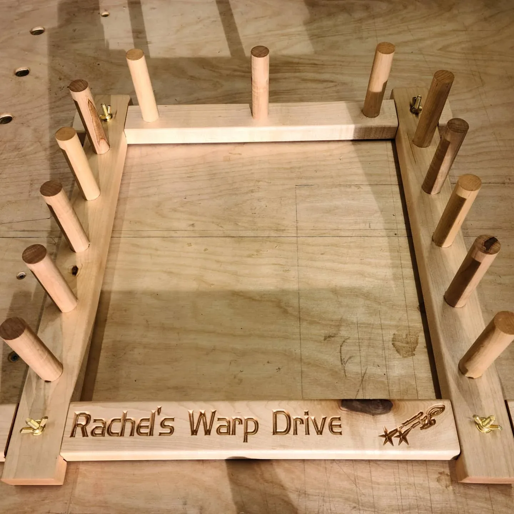

Piece / project
Piece / projectOne brief. Two sides.
A commissioned board with a walnut chopping face, a contrasting serving face, and an open-ended visual brief.
Boards & crafted goods • Individual piece
The first end-grain cutting board identified in the archive: a walnut center and purpleheart border.
The July 2020 post identifies this as my first end-grain cutting board. I used walnut for the center, purpleheart around the border, and finished it at 20 3/8 by 15 1/8 inches.
This was my first end-grain cutting board. I used walnut through the center and framed it with purpleheart, then finished the board at 20 3/8 by 15 1/8 inches. The border uses side grain, so the wood direction is part of the construction as well as the look. I kept the dimensions and species with the project because they show exactly what I made instead of reducing it to another board in a group photo.
Project work: Michael Pytlowany. Original archive photograph.
Mike's Functional Artistry archive
2020-07-22
KEEP EXPLORING
Piece / projectA commissioned board with a walnut chopping face, a contrasting serving face, and an open-ended visual brief.

Series / groupPatterns, contrasting woods, and a whole batch of boards. Useful objects with room to play.

Piece / projectA Star Trek-themed cherry warping board. A useful weaving tool with science fiction built in.